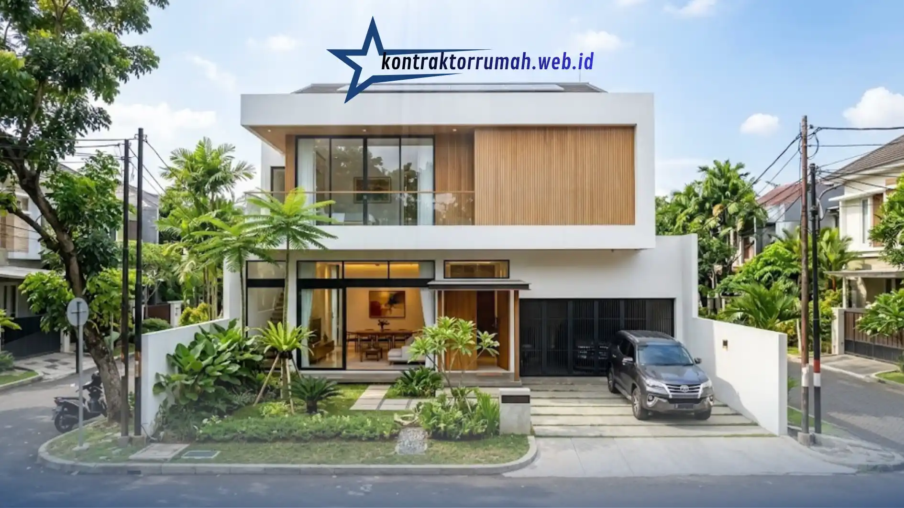

Membangun rumah adalah investasi besar yang membutuhkan perencanaan biaya yang matang, terutama di wilayah Jakarta, Tangerang, dan Bekasi (Jabodetabek) yang memiliki karakteristik harga material dan upah tukang yang berbeda-beda antar area. Memahami kisaran biaya bangun rumah per meter persegi (m2) akan membantu pemilik rumah menyusun anggaran secara realistis sebelum memulai proyek konstruksi.
Poin Penting
- Biaya bangun rumah per m2 di Jabodetabek terbagi tiga kelas kualitas: sederhana, menengah, dan mewah, dengan kisaran harga yang berbeda cukup jauh.
- Lokasi lahan, kondisi tanah, pemilihan material, dan tingkat kerumitan desain menjadi faktor utama penentu biaya per m2.
- Jakarta cenderung memiliki biaya jasa tukang lebih tinggi, sementara Tangerang dan Bekasi umumnya lebih kompetitif di area pinggiran.
- Angka biaya per m2 hanya estimasi awal, belum termasuk biaya desain arsitek, perizinan (PBG), dan pematangan lahan.
- Menyiapkan dana cadangan dan memilih kontraktor berdasarkan rekam jejak membantu mencegah pembengkakan biaya di luar rencana.
Apa yang Dimaksud dengan Biaya Bangun Rumah per m2?
Biaya bangun rumah per m2 adalah estimasi total pengeluaran konstruksi yang dibagi dengan luas bangunan, digunakan sebagai patokan awal untuk menghitung total anggaran proyek. Angka ini mencakup material, upah tukang, dan sebagian biaya operasional proyek, namun umumnya belum termasuk biaya desain arsitek, perizinan (IMB/PBG), dan pematangan lahan.
Perhitungan ini bersifat estimasi kasar. Setiap rumah memiliki spesifikasi berbeda, sehingga angka per m2 sebaiknya dipakai sebagai acuan awal, bukan patokan final sebelum ada Rencana Anggaran Biaya (RAB) yang detail dari kontraktor.
Kisaran Biaya Bangun Rumah per m2 Berdasarkan Kualitas Bangunan
Secara umum, biaya konstruksi rumah tinggal di kawasan Jabodetabek dapat dikelompokkan menjadi tiga tingkatan kualitas, meskipun angka pastinya tetap dapat bervariasi tergantung kondisi lapangan, harga material saat pengerjaan, dan kompleksitas desain.
- Kualitas sederhana (standar rumah subsidi/rumah tapak minimalis dasar): umumnya berada di kisaran menengah bawah, menggunakan material standar seperti bata ringan, atap baja ringan dengan genteng metal, dan finishing cat sederhana.
- Kualitas menengah (rumah minimalis modern populer di perumahan): berada di kisaran menengah, dengan material yang lebih variatif seperti keramik granit ukuran besar, kusen aluminium, dan sistem kelistrikan yang lebih rapi.
- Kualitas mewah (custom design, material premium): berada di kisaran atas, menggunakan material seperti granit alam, kusen kayu solid atau UPVC premium, sistem smart home, dan detail arsitektural khusus.
Kisaran biaya tersebut umumnya bergerak dari beberapa juta rupiah per m2 pada kelas sederhana hingga dua kali lipat atau lebih pada kelas mewah. Karena harga material bangunan dan upah tukang berubah dari waktu ke waktu, sebaiknya pemilik rumah selalu meminta penawaran harga terbaru dari kontraktor sebelum menetapkan anggaran final.
Apa Saja Faktor yang Memengaruhi Biaya Bangun Rumah?
Beberapa faktor utama yang membuat biaya bangun rumah per m2 berbeda-beda antar proyek meliputi lokasi lahan, kondisi tanah, pemilihan material, desain, hingga jumlah lantai.
Lokasi dan aksesibilitas lahan. Lahan yang berada di gang sempit atau sulit dijangkau kendaraan material biasanya menambah biaya transportasi dan tenaga kerja manual. Wilayah dengan harga tanah tinggi seperti sebagian Jakarta Selatan juga cenderung memiliki biaya jasa tukang dan kontraktor yang lebih tinggi dibanding daerah pinggiran Tangerang atau Bekasi.
Kondisi tanah dan struktur bawah. Tanah yang lembek atau memiliki muka air tanah tinggi membutuhkan pondasi khusus, seperti pondasi tiang pancang atau cakar ayam yang diperkuat, sehingga menambah biaya struktur secara signifikan.
Pemilihan material bangunan. Material menjadi komponen biaya terbesar dalam konstruksi rumah, biasanya mencakup lebih dari separuh total anggaran. Pemilihan antara bata merah, bata ringan (hebel), atau material dinding alternatif lainnya akan memengaruhi total biaya secara langsung.
Desain dan tingkat kerumitan bangunan. Desain dengan banyak sudut, dak beton yang luas, void, atau elemen arsitektural khusus membutuhkan waktu pengerjaan dan keahlian tukang yang lebih tinggi, sehingga menambah biaya per m2.
Jumlah lantai. Rumah bertingkat umumnya memiliki biaya per m2 yang sedikit lebih tinggi dibanding rumah satu lantai, karena kebutuhan struktur penopang tambahan seperti kolom, balok, dan tangga.
Bagaimana Perbandingan Biaya di Jakarta, Tangerang, dan Bekasi?
Meskipun berada dalam satu kawasan metropolitan, ketiga wilayah ini memiliki karakteristik biaya yang sedikit berbeda karena faktor harga tanah, upah tenaga kerja, dan tingkat kesulitan mobilisasi material.

Jakarta cenderung memiliki biaya jasa tukang dan kontraktor yang relatif lebih tinggi dibanding dua wilayah lainnya, terutama di area padat penduduk yang membutuhkan penanganan akses lahan lebih rumit. Di sisi lain, ketersediaan toko material dan tenaga kerja terampil di Jakarta juga lebih banyak, sehingga distribusi material bisa lebih cepat.
Tangerang, khususnya area yang berkembang seperti BSD, Gading Serpong, hingga Tangerang Kota, umumnya menawarkan biaya konstruksi yang sedikit lebih kompetitif dibanding Jakarta, dengan banyak pilihan supplier material karena pertumbuhan kawasan perumahan yang pesat.
Bekasi memiliki karakteristik serupa dengan Tangerang, di mana biaya cenderung lebih terjangkau di area pinggiran, namun bisa mendekati harga Jakarta pada kawasan yang lebih dekat dengan perbatasan Jakarta Timur.
Perbedaan biaya antar wilayah ini biasanya tidak terlalu ekstrem, namun cukup signifikan jika dikalikan dengan luas bangunan yang besar, sehingga penting untuk membandingkan penawaran dari beberapa kontraktor lokal di masing-masing wilayah.
Apa Saja Komponen yang Termasuk dalam Biaya Bangun Rumah?
Total biaya konstruksi rumah umumnya terbagi ke dalam beberapa komponen utama berikut ini.
Pekerjaan struktur mencakup pondasi, kolom, balok, dan pelat lantai, yang menjadi fondasi kekuatan bangunan dan biasanya menjadi prioritas anggaran pertama yang tidak boleh dikurangi kualitasnya.
Pekerjaan arsitektur meliputi dinding, atap, plafon, lantai, pintu, dan jendela, yang menentukan tampilan akhir rumah sekaligus kenyamanan penghuni.
Pekerjaan mekanikal elektrikal (ME) mencakup instalasi listrik, air bersih, air kotor, serta sistem sanitasi, yang seringkali menjadi bagian yang terlewat dari perhitungan awal namun berdampak besar pada kenyamanan jangka panjang.
Pekerjaan finishing meliputi pengecatan, pemasangan keramik, sanitary, dan detail interior dasar, yang menjadi komponen yang paling fleksibel untuk disesuaikan dengan anggaran yang tersedia.
Apa Kesalahan Umum saat Menghitung Anggaran Bangun Rumah?
Banyak pemilik rumah terjebak pada beberapa kesalahan berikut saat merencanakan anggaran konstruksi.
Menetapkan anggaran hanya berdasarkan harga per m2 tanpa memperhitungkan biaya di luar konstruksi, seperti perizinan, biaya desain, dan pematangan lahan, sering membuat anggaran akhir membengkak di luar rencana awal.
Tidak menyediakan dana cadangan untuk kondisi tak terduga, seperti kondisi tanah yang ternyata lebih sulit dari perkiraan awal atau kenaikan harga material selama masa konstruksi, juga menjadi penyebab umum pembengkakan biaya.
Memilih kontraktor hanya berdasarkan harga termurah tanpa mengecek rekam jejak dan kualitas pekerjaan sebelumnya berisiko menimbulkan biaya tambahan di kemudian hari akibat pekerjaan yang harus diperbaiki ulang.
Tips Menghemat Biaya Bangun Rumah Tanpa Mengorbankan Kualitas
Beberapa strategi berikut dapat membantu menekan biaya konstruksi secara wajar tanpa mengurangi kekuatan dan keamanan bangunan.
Merancang denah rumah yang efisien dengan meminimalkan lorong dan ruang mati dapat mengurangi luas bangunan yang perlu dibayar tanpa mengurangi fungsi ruang. Memilih bentuk atap dan struktur yang sederhana namun tetap estetis juga dapat menekan biaya pekerjaan atap yang cenderung memakan porsi anggaran cukup besar.
Membeli material dalam jumlah besar secara langsung dari distributor, dibandingkan melalui banyak perantara, dapat membantu mendapatkan harga yang lebih kompetitif. Menunda sebagian pekerjaan finishing atau interior yang tidak mendesak juga menjadi cara umum untuk menyesuaikan pengeluaran dengan ketersediaan dana pada tahap awal.
Biaya bangun rumah per m2 di Jakarta, Tangerang, dan Bekasi dipengaruhi oleh banyak faktor, mulai dari kualitas material, kondisi lahan, hingga lokasi spesifik proyek. Sebagai langkah awal, pemilik rumah disarankan untuk berkonsultasi langsung dengan kontraktor terpercaya di wilayah masing-masing guna mendapatkan Rencana Anggaran Biaya (RAB) yang lebih akurat sesuai kebutuhan dan kondisi lahan yang sebenarnya.